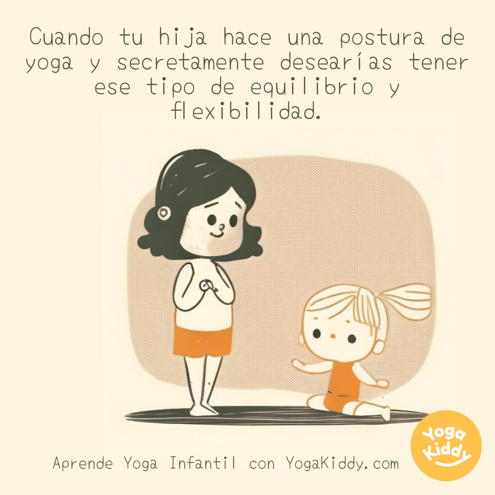

La luz del sol se filtraba a través de las cortinas de la sala de estar mientras observaba a mi hija de seis años hacer una postura de yoga en el suelo. Sus pequeñas manos tocaban el suelo mientras levantaba una pierna hacia atrás en un arco perfecto. Su rostro estaba sereno y concentrado, y su cuerpo se movía con gracia y fluidez. La envidia me invadió secretamente mientras la observaba.
Como adulto, había intentado el yoga en varias ocasiones, pero siempre me había sentido incómoda y torpe. Mi equilibrio era precario y mi flexibilidad era limitada en comparación con la de mi hija. Me encantaría tener la facilidad con la que ella se movía, la confianza con la que se estiraba y la calma que parecía emanar mientras practicaba.
Observar a mi hija me hizo darme cuenta de la belleza y la pureza del momento presente. Ella no se preocupaba por el pasado o el futuro, simplemente disfrutaba del momento y se entregaba por completo a la práctica del yoga. Me hizo reflexionar sobre cómo a menudo los adultos nos preocupamos demasiado por los resultados, por lograr metas y compararnos con los demás, en lugar de simplemente disfrutar del proceso y conectarnos con nuestro propio cuerpo y mente.
Mi hija me enseñó una valiosa lección ese día: el equilibrio y la flexibilidad van más allá del cuerpo físico. También se trata de encontrar equilibrio en la vida, de ser flexible en nuestras mentalidades y actitudes, de dejar ir lo que no podemos controlar y adaptarnos a las situaciones cambiantes. El yoga es una metáfora de la vida misma.
Así que, en lugar de envidiar el equilibrio y la flexibilidad de mi hija, decidí inspirarme en ella. Comencé a practicar yoga regularmente, no con el objetivo de alcanzar un nivel específico de habilidad, sino más bien para conectarme con mi propio ser, encontrar equilibrio y flexibilidad en mi mente y mi espíritu, y disfrutar del proceso en lugar de preocuparme por los resultados.
Desde entonces, he aprendido a valorar y apreciar la belleza del momento presente, a no compararme con los demás y a centrarme en mi propio camino. Mi hija me ha enseñado que el verdadero equilibrio y flexibilidad provienen de dentro, y que la verdadera práctica del yoga va más allá de las posturas físicas. Me siento agradecida por su inspiración y por recordarme que la verdadera esencia del yoga se encuentra en la mente y el corazón.